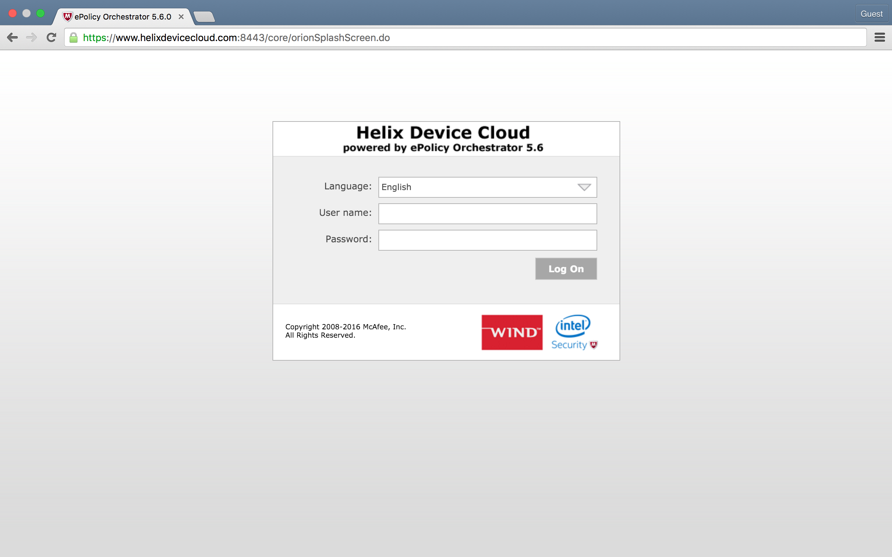
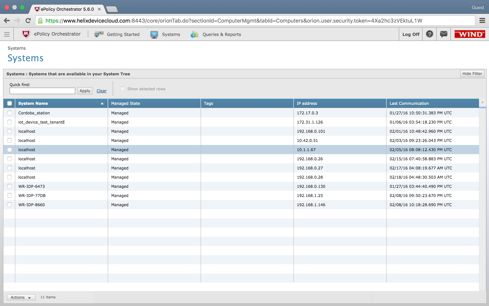
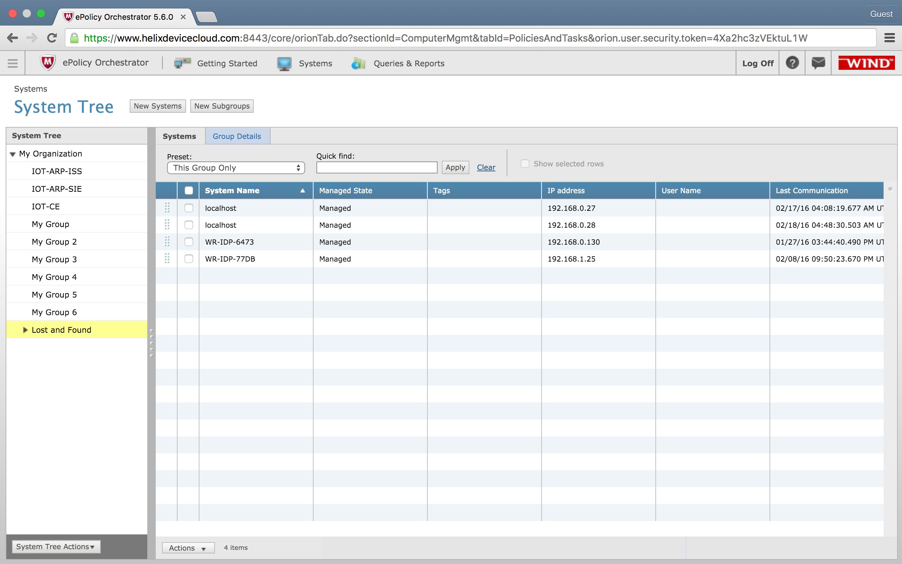
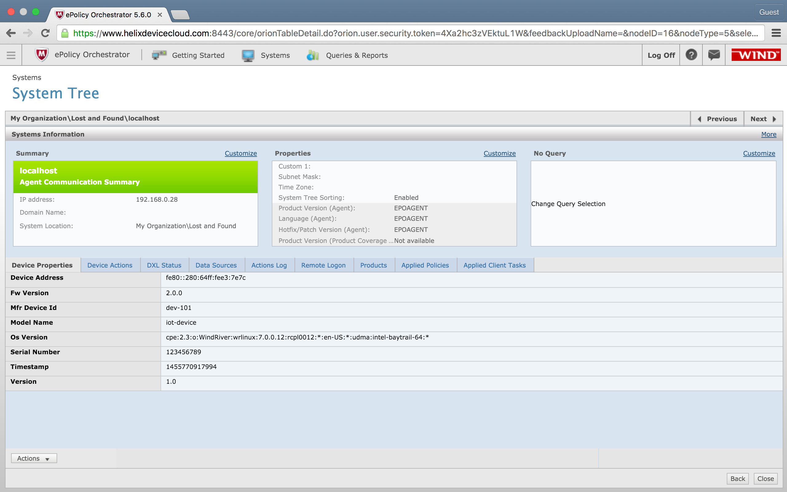
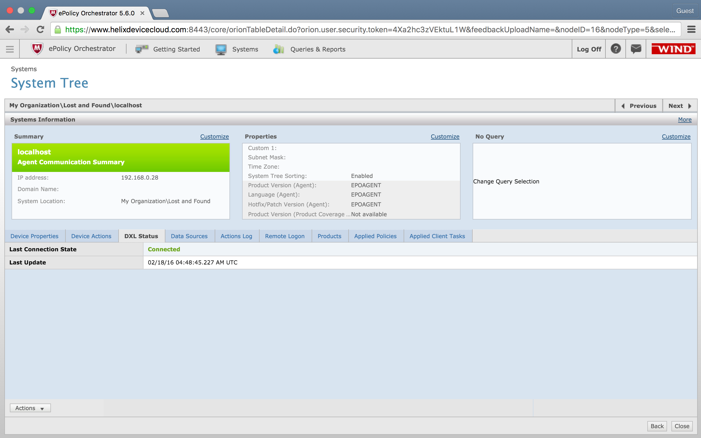
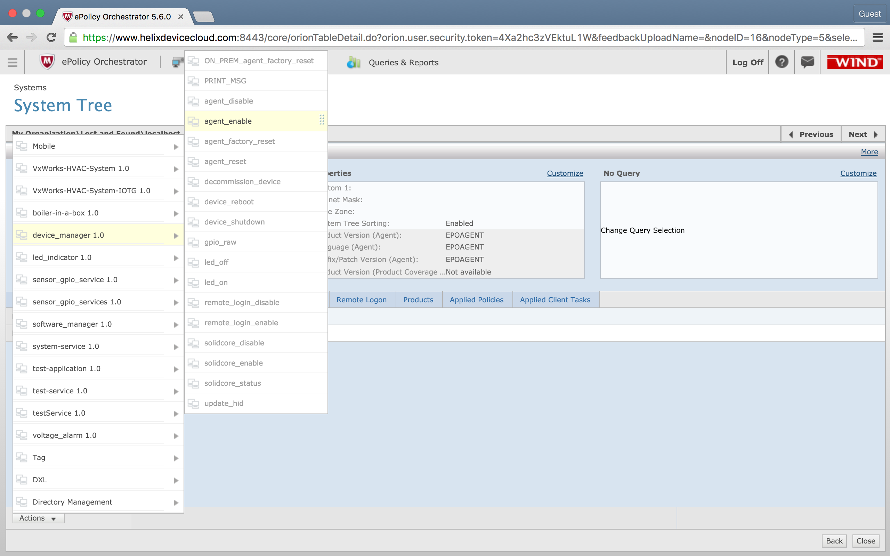
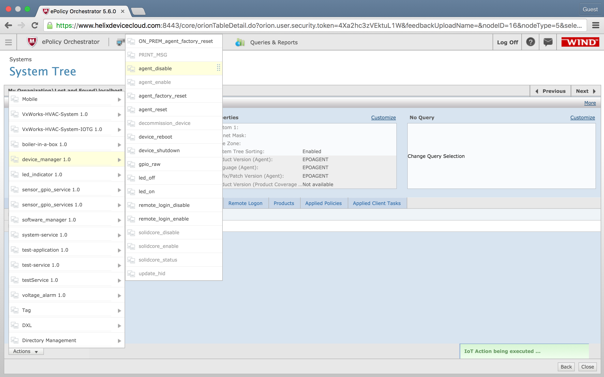

Helix device Cloud
Part 1: Register your device to ePO Server
Connect to Cloud Server
In this exercise, you will connect your gateway to the Helix Device Cloud and enable the HDC agent.
Connecting to a Network Port
-
Identify the IP address assigned to gateway with
$ ifconfig
-
To find the IP address of the board while connected via Ethernet, look beside eth0, then “inet addr:”.
-
In the above screenshot the IP address of the gateway target Ethernet controller is 192.168.0.2
Connecting to Cloud Server
-
Connect to the device management console, by entering the following URL in a browser.
ePO URL:
https://www.helixdevicecloud.com:8443 -
On first connection to the ePO server, the following security pop-up will appear, at least when using Google Chrome as your web browser:

-
Click on 'Advanced', and then 'Proceed to www.helixdevicecloud.com (unsafe)'.

-
Enter your Login Credentials
User name:
Tenant Dependent
Password:User Dependant -
The main screen of ePO server will appear.

Locating your Device
-
In the top menu bar, click on Systems to get the list of registered assets. You will see screen similar to below given image. Find your device looking at the ip address which we got from step 1. You can sort the assets using the 5th column (IP address) to see if new device appears,based on its IP address. Device ID shown in Device console (e.g. root@WR-IDP-8660) also represents the System Name from ePO perspective (WR-IDP-8660). The last 4 digits of this naming convention corresponds to the last 4 digits of the Ethernet device MAC address, as you can see from the output of 'ifconfig' done previously.
 -
If you found your device then click on the device and move to step 4. If you are still searching for your device then open the menu by clicking on Top Left icon (i.e small icon with four horizontal lines). And click on System Tree under Systems.

-
Click on Lost and Found under System Tree. Locate your device from list of registered devices and click on that. If you are still unable to find the device then there might be a problem with internet connection of your device or "startup.bin" might be of different tenant.
 -
This will show system information for your device which includes IP Address, Device Address, Serial Number, OS version etc.
 -
To verify that your device is connected or not connected, you can click on DXL status. The 'DXL Status' pane should indicate as below, an active DXL connection between the asset agent and the ePO server.

Enabling/Disabling Device Agent Remotely
-
Click on the Actions button at the bottom left corner of the screen to display all the action groups, and point to the device_manager 1.0 group to access all the corresponding actions. You'll notice that all the actions are greyed-out, except for agent_enable. This is simply because on first boot of an asset the agent does connect to the cloud backend and does register, but it cannot send telemetry data or accept actions until specifically enabled via the corresponding action. This needs to be done only once; on subsequent reboot of the asset the agent will remain enabled, unless specifically disabled via agent_disable
 -
To disable device agent click on Actions then device_manager 1.0 and agent_disable
 -
To factory reset device agent click on Actions then device_manager 1.0 and agent_factory_reset

Rebooting Device Remotely
-
Click on the Actions button at the bottom left corner of the screen to display all the action groups, and point to the device_manager 1.0 group. Click on device_reboot.

-
Your gateway will start the process of rebooting. This is a sample action which shows one of the feature of helix device cloud for device management.
Note
That page does not get refreshed automatically when the action completes; simply refresh the page manually to verify the action completed.